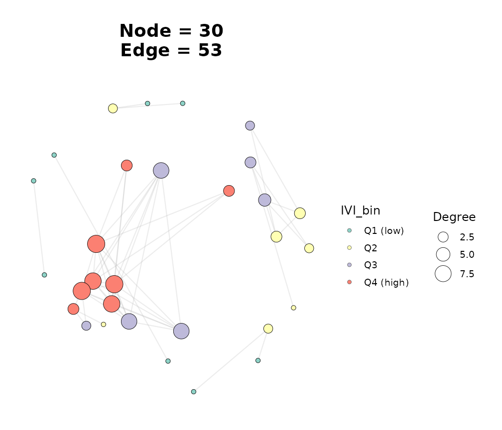
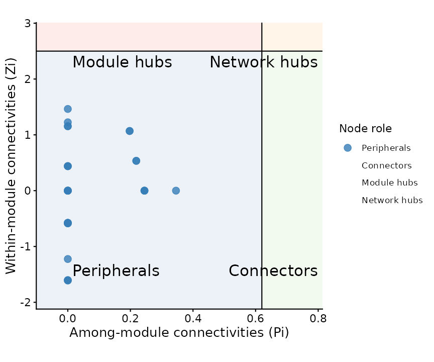

Node-Importance Analysis: Multiple Centralities and IVI
Source:vignettes/node-importance.Rmd
node-importance.RmdWhy look beyond degree?
Degree is the simplest measure of node importance, and it’s what most
network analyses lead with – including the per-node Degree
and Strength columns that every
build_graph_from_*() constructor in ggNetView
already attaches. But degree only counts a node’s immediate neighbours;
it doesn’t tell you whether those neighbours sit on shortest paths
between distant communities (betweenness), whether the node is “central”
in the global topology (closeness, eigenvector), or whether it functions
as a bridge to other modules (Zi-Pi). For a defensible node-importance
analysis you usually want several complementary perspectives, plus an
integrative score that combines them.
ggNetView exposes node-importance functionality at three
levels:
| Function | What it gives you |
|---|---|
Degree, Strength columns |
Local connectivity (set automatically) |
get_node_centrality() |
Eight per-node centralities (this vignette) |
ggnetview_zipi() |
Module-aware Zi-Pi role classification |
get_node_ivi() |
Salavaty 2020 Integrated Value of Influence |
get_network_topology() |
Network-level summaries of the same metrics |
library(ggNetView)
#>
#> ░██ ░██
#> ░██
#> ░████████ ░████████ ░████████ ░███████ ░████████ ░██ ░██ ░██ ░███████ ░██ ░██ ░██
#> ░██ ░██ ░██ ░██ ░██ ░██ ░██ ░██ ░██ ░██ ░██ ░██░██ ░██ ░██ ░██ ░██
#> ░██ ░██ ░██ ░██ ░██ ░██ ░█████████ ░██ ░██ ░██ ░██░█████████ ░██ ░████ ░██
#> ░██ ░███ ░██ ░███ ░██ ░██ ░██ ░██ ░██░██ ░██░██ ░██░██ ░██░██
#> ░█████░██ ░█████░██ ░██ ░██ ░███████ ░████ ░███ ░██ ░███████ ░███ ░███
#> ░██ ░██
#> ░███████ ░███████
#>
#>
#> ggNetView: Reproducible and Deterministic Network Analysis and Visualization
#> Version: 0.2.1
#>
#> Authors: Yue Liu, Chao Wang
#> Maintainer: Yue Liu <yueliu@iae.ac.cn>
#>
#> Manual: https://jiawang1209.github.io/ggNetView-manual/
#> GitHub: https://github.com/Jiawang1209/ggNetView
#> Bug Reports: https://github.com/Jiawang1209/ggNetView/issues
#>
#> Type citation('ggNetView') for how to cite this package.Build a network
We use the package’s otu_rare_relative example data and
pick the 50 most abundant OTUs to keep the vignette responsive.
data(otu_rare_relative)
data(tax_tab)
mat <- as.matrix(otu_rare_relative)
mat <- mat[order(rowSums(mat), decreasing = TRUE)[seq_len(50)], ]
obj <- build_graph_from_mat(
mat = mat,
method = "cor",
cor.method = "spearman",
proc = "BH",
r.threshold = 0.5,
p.threshold = 0.05,
module.method = "Fast_greedy",
node_annotation = tax_tab[tax_tab$OTUID %in% rownames(mat), ],
seed = 1
)
#> The max module in network is 7 we use the 7 modules for next analysis
obj
#> # A tbl_graph: 30 nodes and 53 edges
#> #
#> # An undirected simple graph with 6 components
#> #
#> # Node Data: 30 × 14 (active)
#> name modularity modularity2 modularity3 Modularity Degree Strength Kingdom
#> <chr> <fct> <ord> <chr> <ord> <dbl> <dbl> <chr>
#> 1 ASV_41 2 2 2 2 9 7.36 Archaea
#> 2 ASV_39 2 2 2 2 9 7.24 Bacteria
#> 3 ASV_6 2 2 2 2 8 6.50 Bacteria
#> 4 ASV_10 2 2 2 2 8 6.17 Bacteria
#> 5 ASV_2 2 2 2 2 7 5.78 Archaea
#> 6 ASV_17 2 2 2 2 7 5.72 Bacteria
#> 7 ASV_44 2 2 2 2 7 5.44 Bacteria
#> 8 ASV_24 2 2 2 2 3 2.17 Bacteria
#> 9 ASV_47 2 2 2 2 3 2.29 Bacteria
#> 10 ASV_34 1 1 1 1 4 2.95 Bacteria
#> # ℹ 20 more rows
#> # ℹ 6 more variables: Phylum <chr>, Class <chr>, Order <chr>, Family <chr>,
#> # Genus <chr>, Species <chr>
#> #
#> # Edge Data: 53 × 5
#> from to weight correlation corr_direction
#> <int> <int> <dbl> <dbl> <chr>
#> 1 13 14 0.750 0.750 Positive
#> 2 10 14 0.730 0.730 Positive
#> 3 3 5 0.783 0.783 Positive
#> # ℹ 50 more rowsThe result is a tbl_graph whose node table already
carries Degree, Strength, and
Modularity.
Step 1: Compute per-node centralities
obj_aug <- get_node_centrality(obj)
obj_aug %>%
tidygraph::activate(nodes) %>%
tidygraph::as_tibble() %>%
dplyr::select(name, Degree, Strength, Betweenness, Closeness,
Eigenvector, PageRank, Hub_score, Coreness, Harmonic) %>%
utils::head(8)
#> # A tibble: 8 × 10
#> name Degree Strength Betweenness Closeness Eigenvector PageRank Hub_score
#> <chr> <dbl> <dbl> <dbl> <dbl> <dbl> <dbl> <dbl>
#> 1 ASV_41 9 7.36 8 0.0788 1 0.0478 1
#> 2 ASV_39 9 7.24 1 0.0799 0.978 0.0472 0.978
#> 3 ASV_6 8 6.50 2 0.0757 0.944 0.0422 0.944
#> 4 ASV_10 8 6.17 6 0.0779 0.898 0.0404 0.898
#> 5 ASV_2 7 5.78 0 0.0695 0.903 0.0376 0.903
#> 6 ASV_17 7 5.72 0 0.0705 0.899 0.0372 0.899
#> 7 ASV_44 7 5.44 0 0.0728 0.855 0.0356 0.855
#> 8 ASV_24 3 2.17 0 0.0550 0.354 0.0170 0.354
#> # ℹ 2 more variables: Coreness <dbl>, Harmonic <dbl>get_node_centrality() adds eight new columns
(Betweenness, Closeness, Eigenvector, PageRank, Hub_score,
Authority_score, Coreness, Harmonic) to the existing node schema. Pass
measures = c("Betweenness", "PageRank") (or any subset) to
compute only what you need.
Weighted vs unweighted. Centrality measures interpret edge weights differently. By default
get_node_centrality()uses the unweighted definition; passweighted = TRUEto feed1 / |weight|as the distance vector toigraph(so that strongly correlated pairs count as short paths). For module-detection-friendly inputs the two usually rank the same handful of nodes at the top.
Step 2: Different centralities highlight different nodes
A common observation in network biology is that no single centrality captures all “important” nodes – a node can be a high-degree hub without being on many shortest paths, or vice versa. We can quantify that disagreement:
node_df <- obj_aug %>%
tidygraph::activate(nodes) %>%
tidygraph::as_tibble()
top_n <- 10
top_lists <- list(
Degree = node_df$name[order(-node_df$Degree)][seq_len(top_n)],
Betweenness = node_df$name[order(-node_df$Betweenness)][seq_len(top_n)],
PageRank = node_df$name[order(-node_df$PageRank)][seq_len(top_n)],
Eigenvector = node_df$name[order(-node_df$Eigenvector)][seq_len(top_n)]
)
# Pairwise overlap between top-10 lists.
pairs <- utils::combn(names(top_lists), 2, simplify = FALSE)
do.call(rbind, lapply(pairs, function(pair) {
data.frame(
a = pair[1L],
b = pair[2L],
overlap_top10 = length(intersect(top_lists[[pair[1L]]],
top_lists[[pair[2L]]]))
)
}))
#> a b overlap_top10
#> 1 Degree Betweenness 6
#> 2 Degree PageRank 6
#> 3 Degree Eigenvector 9
#> 4 Betweenness PageRank 8
#> 5 Betweenness Eigenvector 5
#> 6 PageRank Eigenvector 5If two centralities had perfect agreement their pairwise overlap would be 10; if they disagreed completely it would be 0. Real microbiome / gene networks usually fall somewhere in between, and that gap is exactly what a single-metric importance ranking misses.
Step 3: Integrated Value of Influence (IVI)
get_node_ivi() collapses local, semi-local, and global
centralities into one score using the formula of Salavaty et al. (2020).
It’s a thin wrapper over influential::ivi() – the canonical
implementation by the IVI paper’s first author – so the values match the
published algorithm exactly.
The function does one thing: it adds a single new column called
IVI to the input graph’s node table and returns the
augmented tbl_graph. It does not call
ggNetView() or produce any plot – what to do with the IVI
column is entirely up to you.
obj_aug <- get_node_ivi(obj_aug)
# The graph is unchanged except for one new column on the node table:
obj_aug %>%
tidygraph::activate(nodes) %>%
tidygraph::as_tibble() %>%
dplyr::select(name, Modularity, Degree, Betweenness, PageRank, IVI) %>%
utils::head(5)
#> # A tibble: 5 × 6
#> name Modularity Degree Betweenness PageRank IVI
#> <chr> <ord> <dbl> <dbl> <dbl> <dbl>
#> 1 ASV_41 2 9 8 0.0478 34.8
#> 2 ASV_39 2 9 1 0.0472 7.11
#> 3 ASV_6 2 8 2 0.0422 11.3
#> 4 ASV_10 2 8 6 0.0404 27.4
#> 5 ASV_2 2 7 0 0.0376 3.27The most common deliverable is just a ranked table
For most reports and papers, the deliverable is a small table of the most-influential nodes. One pipe:
obj_aug %>%
tidygraph::activate(nodes) %>%
tidygraph::as_tibble() %>%
dplyr::arrange(dplyr::desc(IVI)) %>%
dplyr::select(name, Modularity, Degree, IVI) %>%
utils::head(10)
#> # A tibble: 10 × 4
#> name Modularity Degree IVI
#> <chr> <ord> <dbl> <dbl>
#> 1 ASV_50 3 9 100
#> 2 ASV_41 2 9 34.8
#> 3 ASV_10 2 8 27.4
#> 4 ASV_24 2 3 25.9
#> 5 ASV_47 2 3 25.9
#> 6 ASV_36 3 3 11.5
#> 7 ASV_6 2 8 11.3
#> 8 ASV_39 2 9 7.11
#> 9 ASV_38 3 2 5.71
#> 10 ASV_2 2 7 3.27That’s the whole node-importance answer in five lines. No plot required.
Picking a defensible threshold for “significantly influential”
Default get_node_ivi() uses
influential::ivi(scale = "range"), which normalises IVI to
[1, 100] – great for inspecting the full spread of node
influences within one network. Two other scaling modes support different
downstream questions:
-
scale = "z-scale"standardises IVI as a z-score. Use this when comparing influence across multiple networks (e.g. gut vs soil microbiome), or when you want a numeric threshold backed by a one-sided 0.05 cutoff – the IVI paper suggestsz > 1.645. -
scale = "none"returns the raw IVI scores untouched.
obj_z <- get_node_ivi(obj_aug, scale = "z-scale")
obj_z %>%
tidygraph::activate(nodes) %>%
tidygraph::as_tibble() %>%
dplyr::filter(IVI > 1.645) %>%
dplyr::arrange(dplyr::desc(IVI)) %>%
dplyr::select(name, Modularity, Degree, IVI)
#> # A tibble: 1 × 4
#> name Modularity Degree IVI
#> <chr> <ord> <dbl> <dbl>
#> 1 ASV_50 3 9 4.64Larger IVI always means more influential, so ranking by
dplyr::arrange(dplyr::desc(IVI)) works identically across
all three scaling choices.
Step 4 (optional): Map IVI onto a network plot
If you also want a network plot with IVI as a visual aesthetic, you
can pass the IVI-augmented graph to
ggNetView(). Two notes:
-
ggNetView()is a discrete-fill plotter – itsnode_fillargument maps toggplot2::scale_fill_manual(), so it expects a factor / character column, not raw numeric. - Easiest fix: bin
IVIinto a small ordered factor first (quartiles are usually informative), then pass that bin column asnode_fill.
obj_plot <- obj_aug %>%
tidygraph::activate(nodes) %>%
tidygraph::mutate(
IVI_bin = cut(
IVI,
breaks = stats::quantile(IVI, probs = seq(0, 1, 0.25), na.rm = TRUE),
labels = c("Q1 (low)", "Q2", "Q3", "Q4 (high)"),
include.lowest = TRUE,
ordered_result = TRUE
)
)
ggNetView(
obj_plot,
layout = "fr",
seed = 1,
node_size_range = c(2, 8),
node_fill = "IVI_bin",
module_label = FALSE
)
Network coloured by IVI quartile; warmer = more influential.
The same recipe works for any other continuous centrality column
(Betweenness, PageRank,
Eigenvector, …): wrap it in cut() to produce
an ordered factor, then pass that factor as node_fill.
Step 5: Combine with Zi-Pi role classification
For a complete node-importance picture in a modular network, layer IVI on top of Guimera & Amaral’s Zi-Pi roles:
nodes_bulk <- get_graph_nodes(obj_aug)
adj_mat <- get_graph_adjacency(obj_aug)
zp <- ggnetview_zipi(
nodes_bulk = nodes_bulk,
z_bulk_mat = adj_mat,
modularity_col = "Modularity",
degree_col = "Degree"
)
zp$plot
Zi-Pi quadrant plot; node roles classified by within- vs across-module connectivity.
The four quadrants of the Zi-Pi plot – Module hubs,
Connectors, Network hubs, and
Peripherals – partition the network by topological
role, while IVI ranks every node on a single influence
axis. The two views answer different questions and tend to
complement each other: a top-IVI node that lands in the
Network hubs quadrant is a doubly defensible candidate for
biological follow-up.
Choosing a measure
-
Single best general-purpose score:
IVI. Built specifically to reduce the bias of any one centrality. -
For pathfinding / signal-flow questions:
Betweenness(number of shortest paths) orPageRank(weighted random-walk score). -
For “central in the eigen-structure” questions:
Eigenvectorcentrality. -
For module-aware roles: pair Zi-Pi
(
ggnetview_zipi()) with IVI. -
For network-level comparisons (e.g. comparing two
cohorts):
get_network_topology()gives the same families of metrics as scalar means / sums, useful as cohort-vs-cohort summaries.
References
- Salavaty, A., Ramialison, M., & Currie, P. D. (2020). Integrated
Value of Influence: An Integrative Method for the Identification of the
Most Influential Nodes within Networks. Patterns, 1(5),
- Guimera, R., & Amaral, L. A. N. (2005). Functional cartography of complex metabolic networks. Nature, 433(7028), 895-900.